자연생태복원산업기사 (2006-05-14 기출문제)
1과목: 환경생태학개론
1. 다음 중 두 개의 표본 내 유사도 지수를 구하면? (단, 표본 A의 종수 = 10종, 표본 B의 종수 = 15종, 표본 A, B의 공통 종수 =5종 이다.)
- 0.2
- 0.3
- 0.4
- 0.6
(정답률: 알수없음)

2. 토양의 비옥도를 유지하고, 회복시킬 수 있는 방법으로 적합하지 않은 것은?
- 유기질 비료를 사용함으로써 토양의 침식, 작물의 수확등으로 잃어버린 영양분을 재 보충시켜준다.
- 천연비료인 퇴비는 토양 내 통기성을 높여주는 토양개선체로서 수분과 영양분 보유력을 높여주고 토양침식을 막아준다.
- 효능이 우수한 화학비료를 사용함으로써 토양의 통기성을 높여주고, 강우로 손실된 영양분을 보충해 토양의 산성화를 방지한다.
- 소, 말, 닭의 배설물과 같은 동물성 비료를 사용하여 토양의 구조를 개선해주며, 유기질소를 공급해 토양 내의 유익한 세균과 곰팡이의 성장을 촉진시킨다.
(정답률: 알수없음)
3. 다음 중 생물 간에 상리공생(mutualism)관계가 성립하는 것은?
- 관속식물과 뿌리에 붙어 있는 균근균(mycorrhizal fungl)
- 호두나무와 일반 잡초
- 인삼의 연작
- 복숭아 과수원의 고사목 식재지에 보식한 복숭아 묘목
(정답률: 알수없음)
4. 고도로 조직화된 완전한 군집으로서 태양광선을 받기만 하면 인접한 군집의 도움을 거의 받지 않아도 성립되는 군집은?
- 우점(雩占)군집
- 상호(相互)군집
- 저차(抵次)군집
- 고차(高次)군집
(정답률: 알수없음)
5. 개체군이 경쟁상대에 대하여 유해한 화학물질을 분비하여 밥어를 하는 경우가 있다. 식물에 의한 화학적 제어를 무엇이라 하는가?
- 항상성(恒常性)
- 타강작용(他康作用)
- 편리작용(片利作用)
- 도의(悼依)
(정답률: 알수없음)
6. 생물의 동화량을 나타내는 식으로 옳은 것은?
- 동화량 = 홈 에너지 섭취량 - 소화되지 않거나 배설된 에너지량
- 동화량 = 홈수량 - 호흡량
- 동화량 = 동화율 - 이화율
- 동화량 = 총 에너지 섭취량 - 사용한 에너지량
(정답률: 알수없음)
7. 다음 생태계 피라미드에 대한 설명으로 옳지 않은 것은/
- 영양단계에 따라 생산자, 1차 소비자, 2차 소비자, 분해자 등의 구조를 이룬다.
- 생산자는 독립영양자로 식물과 같이 광합성을 통해 영양물질을 공급한다.
- 1차 소비자는 독립영양자로 초식동물이 해당된다.
- 2차 소비자는 종속영양자로 육식동물이 해당된다.
(정답률: 알수없음)
8. 가정하수 또는 폐수가 호수에 유입되면 발생하는 현상은?
- 호기성 미생물의 번식에 의하여 산소량이 감소되고, 그 뒤에 형기성 미생물이 번식하기 시작한다.
- 혐기성 미생물이 번식하다가 호기성 미생물이 번식하여 수질을 개선하므로 생물의 생육에는 좋을 수 있다.
- 혐기성 미생물의 영향으로 수생식물의 생육이 촉진되므로 식물의 이용도를 높일 수 있다.
- 미생물과 상관없이 수질이 악화되는 현상을 보이지만, 식물 또는 어패류의 번식에는 아무런 관계가 없다.
(정답률: 알수없음)
9. 다음 중 생태학에서 전이대(transition zone)에 대해 가장 바르게 설명한 것은?
- 우기와 건기가 뚜렷한 지역을 말한다.
- 봄, 여름, 가을, 겨울이 뚜렷한 지역이다.
- 두 개의 군집이 서로 겹쳐 있는 지역을 말한다.
- 한 개의 군집이 우점하고 있는 지역을 말한다.
(정답률: 알수없음)
10. 다음 중 외부 간섭을 배제했을 경우 자연천이에 의해 나타나는 산림식생을 대상으로 작성한 도면은?
- 현존식생도
- 생태자연도
- 녹지자연도
- 잠재자연식생도
(정답률: 알수없음)
11. 동물들이 에너지를 이용하여 이루어지는 기본적인 일이 아닌 것은?
- 생체유지
- 경쟁
- 생식
- 성장
(정답률: 알수없음)
12. 다음 중 군집의 기능적 특성이 아닌 것은?
- 먹이망
- 에너지 호용
- 우점중
- 영양구조
(정답률: 알수없음)
13. 개벌(clear-cutting)방법은 땅 위에 모든 나무들을 베어 버린 후 막대한 비용을 들여서 재조림하는 것이다. 이러한 개벌에 대한 설명 중 옳지 않은 것은?
- 인위적으로 개발된 한 종의 나무로 대체하면, 매우 빠르게 생육하여 조기에 재수확할 수 있다는 이점이 있다.
- 한 종의 나무로 대체되면 유전적으로 단순화되어 유전적 변이가 없기 때문에 곰팡이, 세균, 바이러스 등에 대한 저합성이 높아진다.
- 단일 수종은 높은 상업적 가치가 있으며, 나무의 벌목이 주기적으로 반복되면 토양의 양분은 고갈되고 삼림은 가뭄이나 병해충에 대한 대처 능력을 잃게 된다.
- 개벌 후에 비가 내리면 물의 유출이 급격히 증가하게 되어 토양내의 영양소의 이탈(nutrient flush)현상이 일어난다.
(정답률: 알수없음)
14. 연평균 기온과 연평균 강우량에 의하여 나누어지는 육상의 샘물군계에 해당하지 않는 것은?
- 사막
- 초원
- 고산지대
- 극지 및 툰드라
(정답률: 알수없음)
15. 다음 중 ( )에 적합한 것은?
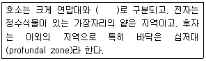
- 변수대
- 표수대
- 담수대
- 조광대
(정답률: 알수없음)
16. 일반적인 산림생태계의 천이과정이 바르게 나열된 것은?
- 나지→1년생 초본→다년생 초본→응수→양수→극상림
- 나지→1년생 초본→다년생 초본→양수→음수→극상림
- 극상림→음수→양수→다년생초본→1년생 초본→나지
- 극상림→1년생 초본→음수→다년생 초본→양수→나지
(정답률: 알수없음)
17. 어느 호수에 수면 1cm2당, 1년에 태양에너지량 120,000cal가 도달되었다. 이 연못의 각 엽망단계별 저장 에너지량은 녹색식물 120cal, 초식동물 30cal, 육식동물은 6cal이었다. 이 연못의 육식동물 에너지 효율은?
- 18%
- 20%
- 25%
- 50%
(정답률: 알수없음)
18. 무독한 뱀이 독사를 닮은 경계색으로 변하는 현상은?
- 공격형 의태
- Mullerian의태
- Batesian 의태
- 의존적 의태
(정답률: 알수없음)
19. 생물다양성 감소와 멸종의 근본적인 원인이 아닌 것은?
- 실험과 연구를 위한 포획
- 인구의 증가
- 환경의 가치와 생태적 혜택을 무시하는 경제체제와 정책들에 의해 환경의 지속가능성을 저하시키는 개발 조장
- 경제성장과 생활수준의 향상에 따른 1인당 자원 사용량의 증가로 인한 생물 서식처 파괴
(정답률: 알수없음)
20. 생태계 내 에너지와 물질에 대한 설명으로 옳은 것은?
- 일정한 생태계 내에서 에너지는 물질과 함께 순환한다.
- 일정한 생태계 내에서 에너지는 순환하며, 물질은 이동하여 일정부분 소실된다.
- 일정한 생태계 내에서 에너지는 이동하여 일정부분 소실되며, 물질은 순환한다.
- 일정한 생태계 내에서 에너지와 물질은 함꼐 이동하여 일정부분 소실된다.
(정답률: 알수없음)
2과목: 환경학개론
21. 1992년 브라질 리우에서 개최된 지구정상회의에서 채택된 협약이나 선언이 아닌 것은?
- 생물다양성보존협약(Convention on Biological Diversity)
- 기후변화협약(Convention on Climatic Change)
- 의제 21(Agenda 21)
- 희귀생물협약(Convention on Rare Species)
(정답률: 알수없음)
22. 택지개발시 토양보전과 물순환체계 확보를 위한 환경지표로서 활용 가능한 것과 가장 거리가 먼 것은?
- 불투수포장면적
- 녹지율
- 녹지용적계수
- 토양경도
(정답률: 알수없음)
23. 다음 중 생태ㆍ녹지네트워크의 구성요소가 아닌 것은?
- 핵
- 거점
- 광장
- 생태통로
(정답률: 알수없음)
24. 이산화탄소 등 화석연료에 의해 온실효과가 발생하고 그 결과 생태계에 많은 문제를 발생시키고 있는 것과 관련이 있는 것은?
- 사막회
- 산성비
- 지구온난화
- 오존층파괴
(정답률: 알수없음)
25. 아래와 같은 월평균기온을 보이는 도시의 온량지수 값은? {단, 온량지수 =
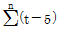
(n은 t＞5℃ 개월수)}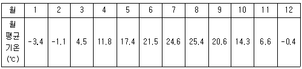
- 96.3℃ㆍmonth
- 101.0℃ㆍmonth
- 101.7℃ㆍmonth
- 102.2℃ㆍmonth
(정답률: 알수없음)
26. 녹지자연도에 대한 설명으로 틀린 것은?
- 식물군락의 좀조성을 기반으로 녹지성과 자연성을 고려한다.
- 0~7 등급으로 구분한다.
- 5등급은 완충지역으로 구분하고 잔디, 갈대조림 등의 초원조립지, 유령림 등이 포함된다.
- 식생과 토지이용 현황에 따라 녹지공간의 상태를 등급화한 것이다.
(정답률: 알수없음)
27. 산림-계곡환경의 친환경적인 관리지침을 토대로 한 규제 지침 중 건축물의 기준지침으로 타당하지 않은 것은?
- 산림 및 계곡의 지형에 순응하는 건물형태 및 평면지붕의 원칙
- 건축물의 위치, 높이는 주요 산, 계곡으로의 조망을 고려한 시뮬레이션 결과를 고려하여 허용
- 구롱지 및 계곡의 급경사지를 적극적으로 활용한 건축물 배치
- 지붕 녹화 등 구조물과 외부공간의 적극적인 녹화 유도
(정답률: 알수없음)
28. 산업단지에 완충녹지 기능을 포함한 도시림을 조성하려할 때 옳지 않은 것은?
- 도시미관을 고려하여 정형식 식재패턴을 유지한다.
- 환경정홧를 주 수종으로 도입하며, 대기오염에 강한 수종을 식재한다.
- 해당 지역의 자연림을 분석하여 자생수종, 식생구조등을 적극 도입한다.
- 녹지의 폭은 지역의 특성과 인접 토지이용과의 관계, 풍향, 기후, 자연조건, 사회조건 등을 고려한다.
(정답률: 알수없음)
29. 야생동물 이동통로 크기를 결정할 때의 고려사항으로 틀린 것은?
- 기존 야생동물 이동통로의 특성을 파악한다.
- 연결대상 서식지간의 거리는 가능한 짧고 직선을 유지한다.
- 이동통로 안에는 종이 서식하지 않도록 한다.
- 통로의 길이가 길수록 폭은 넓게 한다.
(정답률: 알수없음)
30. 대도시의 인구과밀로 발생하는 여러 가지 문제들을 해소하기 위해 계획ㆍ건설되는 신도시의 모델로 이요되고 있는 도통통합형의 저밀도 경관도시인 전원도시를 최초로 제안한 사람은?
- Kevin Lynch
- I. McHarg
- A. Rapoport
- Ebeezer Howard
(정답률: 알수없음)
31. 한반도 자연생태계의 근간을 이루는 산출기로서 생태축이며 우리나라 특산식물의 보호, 멸종위기 야생동식물의 생육 및 서식보고로서 최근 보호의 필요성이 높게 제기되고 있는 곳은?
- 백두대간
- 국립공원
- 생태공원
- 태백산맥
(정답률: 알수없음)
32. 도시공원을 조성할 때 생태적 고려사항으로 가장 적합한 것은?
- 광창은 원칙적으로 불투투성 포장재로 포장한다.
- 곤충, 조류 등은 공원관리상 배제하는 것이 좋다.
- 소생태계를 이전 복원할 때는 규격이 큰 수목을 주로 이식한다.
- 수변부는 수질정화기능과 서식처, 특징있는 경관을 함께 고려한다.
(정답률: 알수없음)
33. 습지보전법에서 규정한 습지보전기본계획의 수립에 포함되어야 할 사항이 아닌 것은?
- 습지의 훼손원인 분석 및 훼손된 습지의 복원
- 습지보전을 위한 교육 및 홍보
- 습지보전을 위한 전문인력 및 전문기관의 육성
- 훼손된 습지의 경제적 가치산정
(정답률: 알수없음)
34. 생태 연못 조성기법에 대한 설명으로 가장 적합한 것은?
- 수돗물을 수윈으로 하는 경우 바로 사용해도 상관없다.
- 연못의 호한처리는 단순하게 처리하여 설계 및 시공이 용이하도록 한다.
- 연못주변에는 햇볕이 잘 들도록 그늘을 피한다.
- 연못의 호안은 완만한 경사가 되도록 조성한다.
(정답률: 알수없음)
35. MacArthur와 Wllson의 도서생물지리학 이론에 의해 도시내에 생태공원을 조성하는 경우 바람직한 것은?
- 동일한 면적을 조건으로, 큰 공원 하나 보다는 작은 공원을 여러 군데 조성한다.
- 작은 공원들은 서로 적당한 간격으로 떨어져 입지하는 것이 바람직 하다.
- 주변길이에 대한 면적의 비가 최대인 원형의 공원이 기다란 모양의 공원보다 좋다.
- 공원은 면적, 거리, 모양에 관계 없다.
(정답률: 알수없음)
36. 지구환경파괴의 주요 유형이 아닌 것은?
- 지구사악화
- 지구온난화
- 도시화ㆍ산업화
- 오존층파괴
(정답률: 알수없음)
37. 다음 자연환경의 보전을 위한 관련 법과 계획의 연결이 틀린 것은?
- 습지보전법 - 습지보전기초계획
- 자연공원법 - 자연공원기초계획
- 자연환경보전법 - 자연환경보전기본계획
- 환경정책기본법 - 국가환경종합계획
(정답률: 알수없음)
38. 생태계 복원계획 수립을 위한 다양한 구상으로 거리가 먼 것은?
- 생태계의 천이과정을 고려한다.
- 생물서식공간으로서의 기능을 포함하는 것이 바람직하다.
- 수리수문학적 고려와 아울러 수질개선을 위한 접근이 중요하다.
- 유벽의 개념보다는 단위생태계의 구조와 기능을 중심으로 고려하는 것이 더 좋다.
(정답률: 알수없음)
39. 토지이용과 환경변화의 관계를 파악할 수 있는 환경지표로서, 경관요소로 들어오는 태양에너지에 대해 반사되는 에너지의 비로 구해지는 것은?
- 알베도
- 증발산향
- 우점도
- 유사도
(정답률: 알수없음)
40. 환경친화적 국토관리를 위한 방안으로 부적합한 것은?
- 자연환경과 생활환경에 미치는 영향을 사전에 고려하여 토지이용에 관한 종합적인 계획을 수립하고 이에 따라 국토공간을 체계적으로 관리한다.
- 경제적인 측면에서 국토공간을 가장 효율적으로 이용할 수 있도록 국토계획이나 사업을 사전에 수령하여 집행한다.
- 산ㆍ하천ㆍ호수ㆍ연안ㆍ해양으로 이어지는 자연생태계를 통합적으로 관리ㆍ보전한다.
- 국토의 무질서한 개발을 방지하기 위해 사전에 환경계획을 수립하고 이를 토대로 국토계획을 수립한다.
(정답률: 알수없음)
3과목: 생태복원공학
41. 옥상에 생태계를 조성하기 위한 계획 및 설계시 옥상의 구조를 고려하여 하중을 줄이기 위한 방법으로 옳은 것은?
- 경량토의 사용
- 건조에 강한 식물 식재
- 철재시설물의 설치
- 우수의 활용
(정답률: 알수없음)
42. 도시 물 순환의 특성으로 틀린 것은?
- 도시는 불투성이 증가하고, 지표면 치일화로 유출이 빠르게 진행되는 특성이 있다.
- 빗물의 저류는 빗물의 빠른 유출을 목적으로 한다.
- 빗물관리 시스템의 처음은 전처리(pre-treatment) 단계로 이 단계에서 수질이 정화된다.
- 빗물을 많이 침투시키려면 자연지반의 비율이 높아야 한다.
(정답률: 알수없음)
43. 유적이 약 500m2이고, 유속이 36(m/sec)일 때 유량은?
- 18,000m3/sec
- 50m3/sec
- 5m3/sec
- 1,800m3/sec
(정답률: 알수없음)
44. 다음 중 해안 식재에 적합한 용도로 구성된 식물은?
- 산국, 땅채송화, 순비기나무
- 한라구절초, 용담, 곰취
- 우산나물, 창포, 할미꽃
- 담쟁이, 초롱꽃, 노루귀
(정답률: 알수없음)
45. 다음 표는 산지 1ha당 경사도별 연끊기 시공 연장표이다. ( )안에 알맞은 계단연장은? (단, 본 표의 1ha는 가로 100m, 세로 100m 이다.)
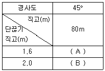
- A : 5,000m, B : 4,000m
- A : 4,000m, B : 5,000m
- A : 4,000m, B : 2,000m
- A : 2,000m, B : 4,000m
(정답률: 알수없음)
46. 임해매립지 식재기반조성 기법으로 세립이사질토가 가장 많은 중심부에서 외곽부로 모래 배수구를 만들어 준 후 그외에 산 흙을 넣어 수옥을 식재하는 그림과 같은 방법은?
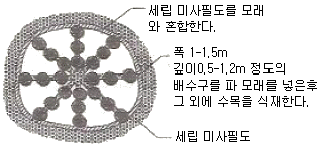
- 사주법
- 비사 방지용 산흙피복법
- 사구법
- 치환객토법
(정답률: 알수없음)
47. 다음 중 습지지역에서 식생하며 수질정화 효과가 있는 식물로 틀린 것은?
- 갈대
- 부들
- 덩쿨
- 갈풀
(정답률: 알수없음)
48. 생태 숲의 식생으로 고려해야 할 사항이 아닌 것은?
- 교목의 수관면적은 총 수관면적의 70% 이상
- 교목의 구성은 침엽수와 활엽수가 각각 70% 이하
- 교목의 구성은 낙엽성과 상록성이 각각 70% 이하
- 층 수관면적 중 30% 이상은 복층림으로 조성 또는 정비
(정답률: 알수없음)
49. 경사지에서 일정량 이상의 비가 올 때, 표면유거수가 집수되어 하나의 작은 물길을 형성하면서 진행되는 침식형태를 무엇이라 하는가?
- 우적침식
- 면상침식
- 누구침식
- 구곡침식
(정답률: 알수없음)
50. 곤충류 서식처 조성을 위한 다공질 공간 조성기법이 아닌 것은?
- 풀무더기 놓기
- 통나무 쌓기
- 나뭇가지 더미 놓기
- 생울타리 조성하기
(정답률: 알수없음)
51. 빗물을 이용한 생물 서식공간을 구성할 때 다음은 어떤 시설을 설명한 것인가?
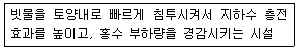
- 저류연못
- 침투연못
- 지하저류조
- 쇄석여과층
(정답률: 알수없음)
52. 수변 완충녹지대의 유형 중 Vegetated filter strip에 해당되는 내용이 아닌 것은?
- 정화녹지대는 수로 옆에 위치할 수도 있지만, 농장에서 유출된 유출수를 처리하기 위해 농장 건물 근처에 종종 사용된다.
- 범람원습지는 낮은 지대에 위치하며, 범람원에 견디는 갈대와 같은 식물로 구성되어 있음.
- 식재된 지역이나 자생식물이 있는 녹지대이다.
- 정화녹지대와 풀로 덮인 수로는 유출수의 속력을 감소시켜 침전물을 가두는 역할을 한다.
(정답률: 알수없음)
53. 중력댐의 안정조건 등 활동에 대한 안정조건식으로 옳은 것은? (단, f: 댐밑과 기초지반과의 마찰계수, H : 수평문력의 총합, V : 수직문턱)
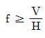
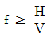
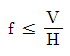
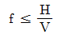
(정답률: 알수없음)
54. ‘선떼붙이기’ 시공방법의 설명 중 틀린 것은?
- 선떼붙이기의 높이는 경사와 일지조건에 따라 달라지는데, 되도록 저급으로 시공하는 것이 효과적이다.
- 표토의 이등방지와 강수차단을 주목적으로 할 때는 3급이상으로 한다.
- 사발지 식재 및 파종을 목적으로 할 떄에는 6급 이하로 시공한다.
- 떼붙이기 기울기는 1 : 0.2 - 1 : 0.3 정도로 한다.
(정답률: 알수없음)
55. A, B지점의 단면적이 각각 50m2, 80m2이고, 지점간의 거리가 10m일 떄의 토사량은 얼마인가? (단, 양단면평균법을 이용한다.)
- 350m3
- 450m3
- 550m3
- 650m3
(정답률: 알수없음)
56. 해안 사방조림에서 앞 모래 언덕의 축조를 위해서 짚, 갚대, 억새, 수숫대, 판자, 플라스틱재, 발 등을 설치하는 시설은?
- 사구대
- 퇴사울타리
- 돌제
- 스파제
(정답률: 알수없음)
57. 다음 중 무기질 토양개량제(soil conditioner)가 아닌 것은?
- 제몰라이트
- 벤토나이트
- 이탄
- 규조토소성립
(정답률: 알수없음)
58. 다음은 생태적 기반환경의 복원 요소 중 어떤 경사지 조건을 설명한 것인가?
- 0~3% 경사지
- 4~8% 경사지
- 9~15% 경사지
- 15~25% 경사지
(정답률: 알수없음)
59. 여러 해 동안의 표면침식과 토양유실로 인하여 산림토양의 비옥도가 매우 쇠퇴하여 척박한 상태의 산지를 무엇이라 하는가?
- 임간나지(林間裸地)
- 척악임지(隻惡林地)
- 민퉁산(忞山)
- 초기 황폐지(初期黃廢地)
(정답률: 알수없음)
60. 다음 중 생태복원공학의 개념과 가장 거리가 먼 것은?
- 비생물 서식지 환경조성
- 생물 서식지 환경조성
- 생태계 및 경관관리
- 생태계의 절대적 보존
(정답률: 알수없음)
4과목: 생태조사방법론
61. 수계에 기름의 유출이 있었다. 기름의 유출로 인하여 수계의 생물상에 어떠한 변화가 나타나겠는가?
- 개체수와 종수가 감소한다.
- 개체수는 감소하고 종수는 증가한다.
- 개체수는 증가하고 종수는 감소한다.
- 개체수와 종수가 증가한다.
(정답률: 알수없음)
62. 차아영소산이 존재할 떄 페놀과 반응하여 생성쇠는 인도 페놀의 정책을 630m에서 측정하는 흡광광도법(인도폐놀법)으로 검출ㆍ정량이 가능한 것은?
- 아질산이온
- 암모늄이온
- 질산이온
- 염소이온
(정답률: 알수없음)
63. 토양환경 조사를 위하여 채토(採土)하는 방법으로 적합한 것은?
- 토양시료는 토양오거를 지면의 수평방향으로 박아서 채취한다.
- 물밑의 연한 저질토를 채취할 떄는 채니기를 사용한다.
- 표토만을 채집할 경우는 납작한 삽으로 단면을 만들어 채토한다.
- 저질토의 pH는 실험실에 운반하여 측정하도록 한다.
(정답률: 알수없음)
64. 선차단법에서 특정 종의 상대회도를 구하기 위해 이용되는 자료로 가장 적합한 것은?
- 선에 겹친 특정 종의 투영면적의 합
- 선에 걸친 특정 종의 길이의 합
- 선에 걸친 특정 종의 개체수의 합
- 대상(bell)내의 특정 종의 면적의 합
(정답률: 알수없음)
65. 질소(N2)가 식물이 이용할 수 있는 형태로 전환되는 과정을 질소고정이라고 하는데, 다음 중 질소를 고정하는 미생물이 아닌 것은?
- Clostridium
- Aspergillus
- Rhizobium
- Frankia
(정답률: 알수없음)
66. 황무지였던 20ha 면적의 야산에 5년 전 재식사업을 한 후 현재까지 생육중에 있는 나무 수(數)를 조사한 결과 아카시아 250그루, 소나무 150그루, 밤나무 30그루, 가문비나무 10그루, 상수리나무 110그루, 전나무 50그루로 조사되었다. 이 곳에서 소나무의 상대밀도는?
- 0.15
- 0.25
- 0.50
- 0.75
(정답률: 알수없음)
67. 생물군집의 정량적 지표에 대한 설명이 잘못된 것은?
- 상대피도는 군집내 모든 종의 피도 종합에 대한 특정종의 피도 백분율이다.
- 동물 표본추출에서 사용하는 밀도지수는 단위면적당 개체수이다.
- 한 종의 상대빈도는 군집내의 한 종의 빈도를 모든 종의 빈도 합으로 나눈 값이다.
- 생물량은 어떤 생물의 무게 또는 단위면적당 무게로서 주로 건조량으로 표시한다.
(정답률: 알수없음)
68. 숲의 내부에서 일정한 면적의 숲틈(gap)이 생겨 수관층이 제거된 지역이 만들어진 경우 개체수가 증가하는 생물은?
- 호랑이
- 고라니
- 가막딱다구리
- 동고비
(정답률: 알수없음)
69. 표본추출시 표본단위를 계층화하는 이유로서 적합하지 않은 것은?
- 표본추출의 문제는 계층에 의해 크게 달라진다.
- 평균과 신뢰한계의 추정치를 계층별로 구할 필요하 있을 경우에 적용된다.
- 계층화는 모집단의 모수를 보다 정밀하게 추정할 수 있게 함으로써 계층이 잘 설정되면 통계량의 신뢰한계가 좁아진다.
- 표본추출은 조사 대상지역의 환경이 균일한 경우 계층화가 유용하다.
(정답률: 알수없음)
70. 표지법에 의한 동물개체군 조사의 대상으로 적합하지 않은 것은?
- 메뚜기
- 숭어
- 쥐
- 진드기
(정답률: 알수없음)
71. 강원도 횡성지역에서 쇠똥구리의 서식 밀도를 조사하기 위하여 16개의 방형구를 아래의 그림과 같이 설치한 결과 방형구내 숫자만큼의 개체수가 확인되었다. 각 방형구의 넓이가 0.81m2라고 가정하면 m2당 쇠동구리의 밀도는? (단, 소수점 3자리에서 반올림한다.)
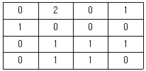
- 0.56
- 0.69
- 0.81
- 0.98
(정답률: 알수없음)
72. 중간상호 작용 중 편리공생(commenselism)에 해당하는 경우는?
- 벌과 꽃
- 진딧물과 개미
- 제비깃털과 조류(algae)
- 흰개미 내장의 흰생생물
(정답률: 알수없음)
73. 넓은 행동권을 가지는 앵금류 및 두루미류, 또는 야행성 올빼미류 및 쑥목새 등의 개체수를 파악하는데 적합한 방법은?
- 세력권 도식법(Territory mapping method)
- 정점 조사법(Point census method)
- 선 조사법(Line transect method)
- 촉구 조사법(Plot samption method)
(정답률: 알수없음)
74. 다음 중 포유류의 조사방법으로 틀린 것은?
- 야간조명을 이용하여 직접 관찰한다.
- 트랩(trap)을 이용한다.
- 발자국, 배설물 등을 조사한다.
- 털어잡기망(beationg)을 이용한다.
(정답률: 알수없음)
75. 식물의 피도 측정 시 기저면적(basal area)은 지상 어느 정도 높이에서 나무 줄기의 직경을 측정하는가?
- 약 50cm
- 약 80cm
- 약 130cm
- 약 200cm
(정답률: 알수없음)
76. 벌리스-툴그렌 깔대기(Berless-Tullgren funnel)는 어떤 동물의 채집에 가장 적합한가?
- 교목층 수관외 무척추 동물
- 포복동물
- 토양의 소혈무척추 동물
- 대형 무척추 동물
(정답률: 알수없음)
77. 하천이 호소나 해양으로 유입하는 하구에 하천을 따라 운반되어 온 토사가 퇴적되어 형성된 것은?
- 사행(meander)
- 능선(ridge)
- 삼각주(delta)
- 화구(crater)
(정답률: 알수없음)
78. 수환경의 물리적인 특성에 관한 설명 중 옳은 것은?
- 수중 생태계는 육상생태계와 유사하게 생물적 요인이 물리ㆍ화학적 요인보다 더 중요하다.
- 호수는 수심이 깊고 온도, 산소, 양분 등의 성층구조를 나타내지만, 연못은 수심이 얕고 계절적인 성층구조가 없으며 물이 빈번히 상ㆍ하로 혼합된다.
- 호소에서는 체적에 대한 표면적의 비율이 중요한데, 그 비율이 클수록 온도와 빛의 강도에 의한 기체교환과 혼합이 잘 일어난다.
- 하천과 육지의 경계지역을 범랑원이라 하고, 홍수 대 주기적으로 침수되는 지역을 하안지역이라 한다.
(정답률: 알수없음)
79. 토양의 함수비를 측정하기 위해 항온건조기에서 건조시키려고 한다. 이떄 건조온도로 가장 적합한 것은?
- 35 - 45℃
- 85 - 95℃
- 1⑤ - 115℃
- 155 - 185℃
(정답률: 알수없음)
80. 식물성 플랑크톤의 생물량을 측정하는데 이용하는 표시법으로 활용되지 않는 것은?
- 건중량
- 세포수
- 광합성색소량
- ATP량
(정답률: 알수없음)